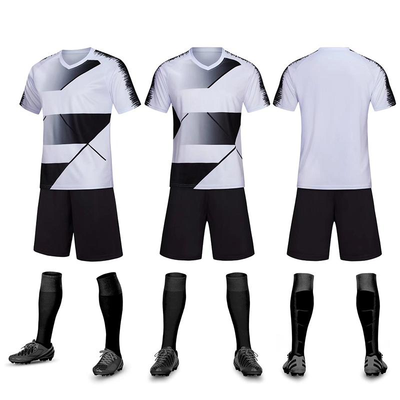
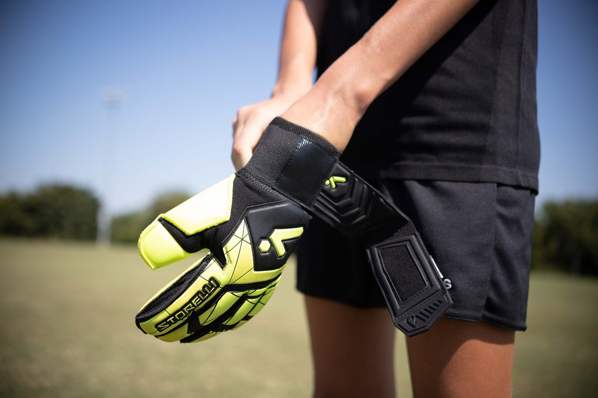
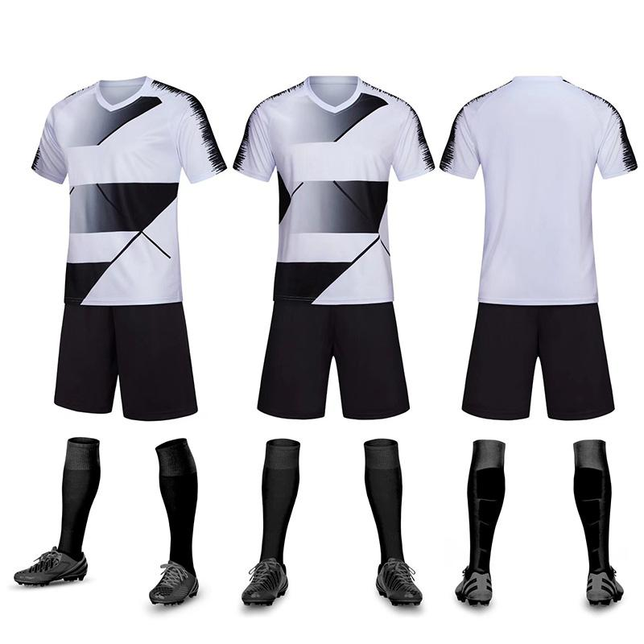
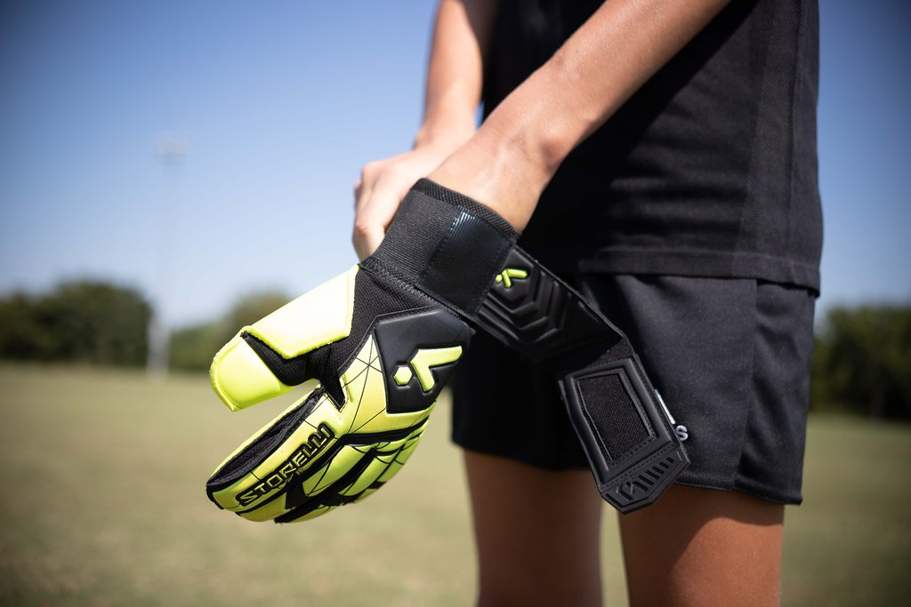

Futebol
No futebol, tanto os jogadores quanto a bola são elementos centrais que contribuem para a magia do esporte. As peças de roupa específicas e o design da bola foram desenvolvidos ao longo do tempo para maximizar desempenho, conforto e segurança, além de refletir a identidade das equipes. As roupas geralmente são feitas de tecidos leves e respiráveis, como poliéster, para facilitar a ventilação e a mobilidade. As cores e o design da camiseta representam o clube ou a seleção, muitas vezes com símbolos e patrocinadores estampados. As chuteiras são fundamentais para o desempenho no futebol. Seus solados com travas proporcionam tração em gramados naturais ou artificiais, garantindo estabilidade e velocidade. Os goleiros utilizam luvas com acolchoamento especial para melhorar a aderência e absorver o impacto da bola, protegendo as mãos em defesas difíceis. A bola é o coração do jogo, e seu design evoluiu consideravelmente desde os primeiros modelos feitos de couro costurado à mão. As peças de roupa no futebol e a bola não são apenas ferramentas práticas, mas também símbolos de estilo, identidade e inovação. Juntos, eles tornam possível a prática do esporte mais amado do mundo, equilibrando tradição e modernidade a cada partida.

Copyright
 


